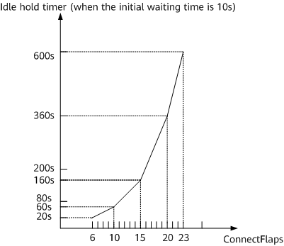

Suppression on BGP peer flapping is a way to suppress flapping. After this function is enabled, BGP peer relationships that flap continuously can be suppressed.
BGP peer flapping occurs when BGP peer relationships are disconnected and then immediately re-established in a quick sequence that is repeated. Frequent BGP peer flapping is caused by various factors; for example, a link is unstable, or an interface that carries BGP services is unstable. After a BGP peer relationship is established, the local device and its BGP peer usually exchange all routes in their BGP routing tables with each other. If the BGP peer relationship is disconnected, the local device deletes all the routes learned from the BGP peer. Generally, a large number of BGP routes exist, and in this case, a large number of routes change and a large amount of data is processed during frequent peer flapping. As a result, a large number of resources are consumed, causing high CPU usage. To prevent this issue, a device supports suppression on BGP peer flapping. With this function enabled, the local device suppresses the establishment of the BGP peer relationship if it flaps continuously.
ConnectFlaps: indicates the peer flapping counter. Each time a BGP peer relationship flaps, the counter changes in increments of 1.
Peer flapping suppression period: The peer flapping suppression period is adjusted based on the ConnectFlaps value.
Idle hold timer: indicates the timer used by BGP to determine the waiting period for establishing a peer relationship with a peer. After the Idle hold timer expires, BGP attempts to establish a new connection with the BGP peer.
Half-life period: When the peer flapping counter (ConnectFlaps value) changes, the peer flapping count adjustment timer starts. If the timer expires (more than 1800s, or 30 minutes, have passed), the ConnectFlaps value is reduced by half. The 1800s period specified by the peer flapping count adjustment timer is called a half-life period.
Entering flapping suppression
As shown in Figure 1, when the ConnectFlaps value reaches a certain value (greater than 5), the Idle hold timer is used to suppress the establishment of the BGP peer relationship. The Idle hold timer is calculated as follows:
Idle hold timer = Initial waiting time + Peer flapping suppression period
If connect-retry-time is not configured, the initial time that BGP waits to establish the peer relationship is 10s. If connect-retry-time is configured, the configured connect-retry-time value is used as the initial waiting time. If the configured connect-retry-time is deleted, Idle hold timer becomes the initial time (10s).
The peer flapping suppression period is processed as follows: If the ConnectFlaps value ranges from 1 to 5, the establishment of the peer relationship is not suppressed. If the ConnectFlaps value ranges from 6 to 10, the peer flapping suppression period increases by 10s each time the ConnectFlaps value is incremented by 1. If the ConnectFlaps value ranges from 11 to 15, the peer flapping suppression period increases by 20s each time the ConnectFlaps value is incremented by 1. Subsequently, the peer flapping suppression period doubles every five times. The peer flapping suppression period no longer increases until the Idle hold timer reaches 600s. This prevents a BGP negotiation failure due to long-time suppression.

When the ConnectFlaps value changes, the peer flapping count adjustment timer starts. If the timer expires (more than 1800s have passed), the ConnectFlaps value is reduced by half, and a half-life period ends. In this case, if the ConnectFlaps value has not reached 0, the next half-life period will start. This process is cyclically repeated until the ConnectFlaps counter is reset. Assume that the ConnectFlaps value is 10. After four half-life periods elapse, the ConnectFlaps value changes to 0, as shown in Figure 2.
Exiting flapping suppression
Peer flapping suppression can be canceled in either of the following ways: